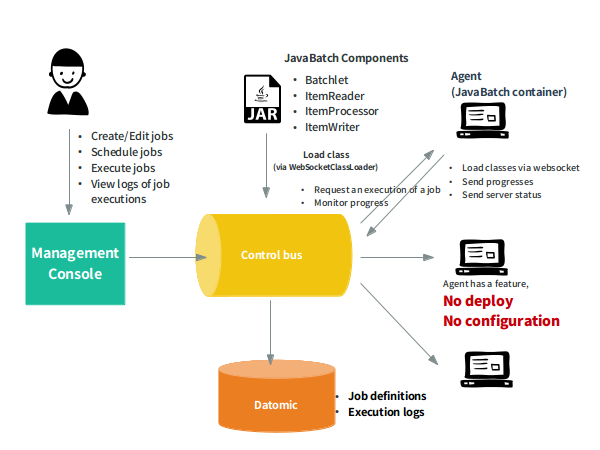

JobStreamer
コンセプト
JobStreamer は JavaBatch の分散実行環境です。JavaBatch に規格化されていない Job をスケジュール実行することも可能です。
Control bus は JobStreamer の制御サーバです。 REST API を提供し、全ての処理を制御します。
Agent は JobStreamer の専用実行エージェントです。設定やデプロイなしで仮想イメージを立ち上げた瞬間にジョブ実行サーバとなるため、負荷量に応じて増減させることが簡単に出来ます。
Management Console は JobStreamer のフロントエンドであり、 Control bus 上の処理を呼び出したり取得結果を表示する機能を持ちます。